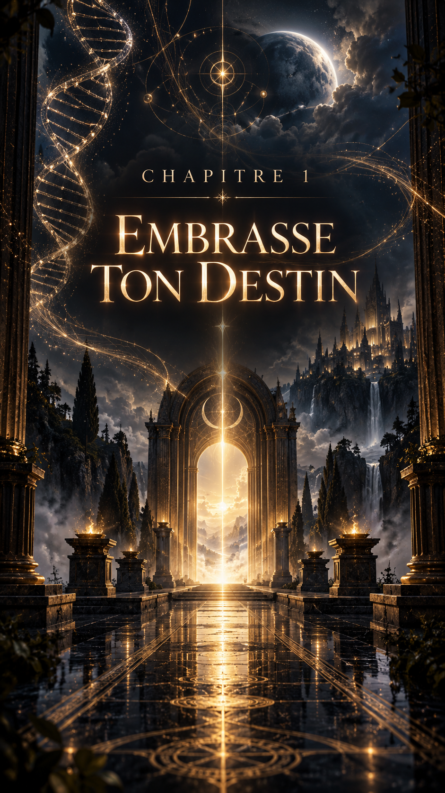
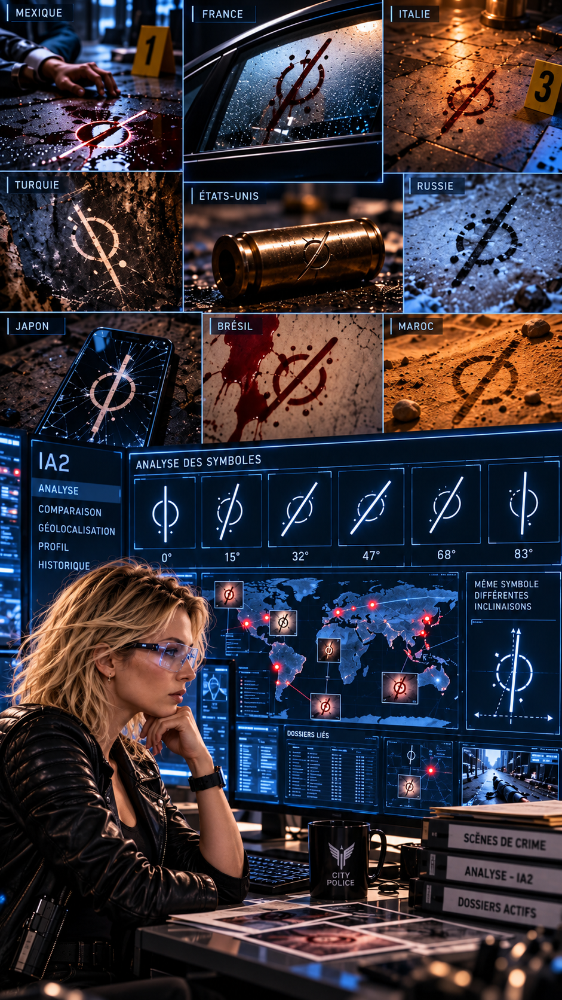
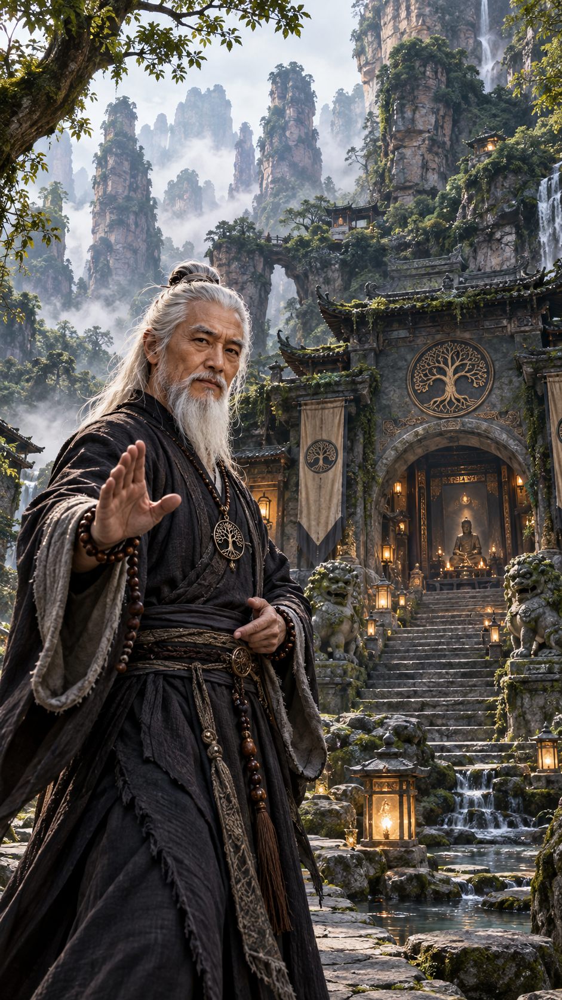

Betty Flores est une chercheuse généticienne mexicaine très réputée. D’une intelligence hors du commun, elle est extrêmement visionnaire et connue dans le monde entier.
Ses découvertes extraordinaires font évoluer la génétique et la médecine à une vitesse inespérée. Ses recherches ont déjà permis de sauver non pas des milliers, mais des millions de vies.
Malgré son succès, elle reste humble. Elle possède néanmoins un caractère bien trempé. Elle sait ce qu’elle veut et suit son chemin, son but, sans jamais rien lâcher.
Betty est, comme à son habitude, en plein travail. Elle étudie différentes hypothèses dans l’espoir de découvrir un moyen de bloquer toutes les altérations possibles de l’ADN humain.
Les mutations génétiques sont son domaine de prédilection.
Elle rêve secrètement de découvrir l’ambroisie des dieux. Non pas pour rendre l’être humain immortel, mais pour parvenir à enrayer la dégradation cellulaire provoquée par une infection ou un traumatisme.
Elle cherche à accélérer la production cellulaire uniquement dans des zones déterminées — infectées ou endommagées — afin d’augmenter la vitesse de régénération des cellules et de permettre des guérisons extrêmement rapides.
Et, idéalement, de limiter le vieillissement cellulaire de l’être humain.
La question éthique ?
C’est une autre histoire.
Betty ne s’en préoccupe guère. Elle est chercheuse avant tout, scientifique dans l’âme. Une généticienne de génie, mondialement reconnue, mais peu respectueuse de l’éthique, de la morale et des règles.
Ce qui lui confère autant d’alliés que d’ennemis.
C’est une femme de caractère : autoritaire, stricte, mais passionnée et dotée d’un grand cœur.
Un peu comme son meilleur ami, Charles Loutcho.
Tous les deux se cachent derrière leur travail.
Charles Loutcho est un chirurgien extrêmement doué, doté d’une réputation sans pareille. Ses patients, comme ses confrères, pensent qu’il est un faiseur de miracles.
Pour lui, rien n’est irréparable.
L’être humain n’est qu’une machine. Certes extrêmement complexe et fragile, mais une machine dont tout peut être changé, réparé ou remplacé.
D’autres le surnomment « l’illuminé chanceux ».
Comme lui, Betty a réalisé l’impensable.
Elle a donné la vie.
Oui, véritablement donné la vie.
Il y a dix-neuf ans, dans le plus grand secret, elle a créé un être humain de sexe féminin sans aucune gestation dans un corps humain.
Elle l’a déclarée comme sa propre fille :
Anna.
Aux yeux du monde, Betty avait simplement été enceinte.
Mais comment a-t-elle réalisé une telle prouesse, direz-vous ?
Observer la fiole
Après avoir étudié jour et nuit, durant des années, le sang contenu dans une fiole impossible à dater, elle découvrit avec stupéfaction les capacités impressionnantes que ce code génétique semblait pouvoir conférer à l’être qui le possédait.
Après mûre réflexion, Betty mélangea son propre code génétique à celui provenant de la fiole.
Cette fiole lui avait été remise secrètement par son amie Root, dans l’espoir que Betty puisse en découvrir non seulement l’origine, mais aussi obtenir une possible datation.
En modifiant puis en créant ce nouveau code génétique, Betty voulait réaliser son rêve de toujours : avoir une fille.
Mais également lui offrir la possibilité d’être protégée, autant que possible, contre les maux de la Terre.
Le code génétique créé par Betty grâce au sang contenu dans la fiole procure à Anna toutes sortes de facultés.
Elle ne possède pas de super-pouvoirs.
C’est une jeune femme comme toutes les autres.
Ou presque.
Si elle se trouvait à côté de vous, vous n’y verriez que du feu.
Elle possède les mêmes aptitudes que n’importe quel être humain, à ceci près qu’Anna en exploite une part bien plus importante que la plupart de ses semblables.
Comprendre Anna
Betty se trouve dans son laboratoire, la tête plongée dans son microscope, comme souvent.
Anna entre discrètement, tel un chat, sans faire le moindre bruit.
Absorbée par ses recherches, Betty ne remarque pas immédiatement sa présence.
Anna s’approche doucement derrière sa mère. Elle veut lui faire une surprise.
Elle pose délicatement ses mains sur ses épaules, comme pour lui offrir un massage, puis l’embrasse sur la joue pour lui dire bonjour, sans prononcer un seul mot.
Bien que très concentrée, Betty ne sursaute pas.
Comme si elle savait qu’il s’agissait d’Anna.
Betty a l’habitude que sa fille passe la voir sans prévenir et, pas une seule seconde, elle n’envisage qu’il puisse s’agir de quelqu’un d’autre.
Elle cesse immédiatement d’observer dans son microscope, fait pivoter sa chaise afin de se retrouver face à Anna et lui adresse un immense sourire.
— J’aimerais bien qu’on déjeune ensemble un de ces jours. Mais je ne veux pas te faire rater tes cours.
— Justement, j’allais te le proposer. Mes cours sont annulés cet après-midi.
— Génial ! Ça tombe bien. Charles m’a parlé d’un petit restaurant qui ne paie pas de mine et que tu vas adorer. Ils font de la cuisine française.
— Non, ce n’est pas vrai ! On va manger français ? Je t’adore, Man ! Tu me connais mieux que personne et tu sais toujours comment me faire plaisir.
Les yeux de Betty pétillent de bonheur tandis qu’elle regarde sa fille.
— Il faudra quand même, un jour, que tu m’expliques ce qui te plaît tant dans la cuisine française.
Betty laisse tout en plan, passe affectueusement un bras autour du cou d’Anna, heureuse de pouvoir partager un moment complice avec elle.
Elles quittent le laboratoire puis prennent l’ascenseur afin de rejoindre le rez-de-chaussée de l’institut.
Une voiture avec chauffeur les attend, ainsi que le véhicule suiveur de leurs gardes du corps.
Dans le Range Rover noir qui les conduit au restaurant, Betty découvre, comme toujours avec beaucoup de plaisir, les nouveautés qui intéressent et passionnent Anna.
Elle suit son évolution avec un intérêt autant affectif que scientifique : son développement intellectuel, émotionnel, psychologique et physique la fascine.
Anna évolue beaucoup plus vite qu’une adolescente dite « normale ».
Son code génétique très particulier amplifie de manière spectaculaire ses aptitudes.
Un peu comme si elle possédait des dons.
Alors qu’il ne s’agit, en réalité, que de capacités humaines que ses semblables exploitent peu, voire pas du tout.
Quelque chose ne va pas
Tout en discutant avec Betty, Anna ressent soudainement l’anxiété de leur chauffeur.
Essayant de ne rien montrer à sa mère, elle tend davantage l’oreille, cherchant à comprendre ce qu’elle ne peut pas encore voir.
Elle veut avoir un temps d’avance sur ce qui pourrait arriver.
Puis, soudain, elle se jette au sol, entraînant sa mère avec elle afin de la protéger.
Des coups de feu retentissent.
Une balle perdue frappe le pare-brise du Range Rover.
Heureusement, le véhicule est équipé de vitres blindées.
Le chauffeur tente de se dégager, sans succès.
Ils sont coincés au beau milieu d’un règlement de comptes impliquant le cartel de Santalucibel.
Les deux femmes se rassurent mutuellement sans dire un mot.
Leurs regards et leurs expressions suffisent.
Ensemble, elles sont fortes.
Curieusement, elles n’ont pas réellement peur.
La voiture parvient finalement à repartir.
Le chauffeur reprend la direction du restaurant français.
Bien qu’il connaisse déjà probablement leur réponse, il leur demande :
— Vous êtes certaines de vouloir rester dans ce quartier et déjeuner ici ?
Il sait pertinemment qu’elles ne changeront sans doute pas d’avis.
Betty et Anna répondent en même temps :
— Bien sûr que oui.
Le chauffeur n’est pas surpris et se demande même pourquoi il a posé la question.
Anna se tourne vers sa mère.
— On ne va pas laisser la peur avoir raison de nous. La peur n’évite pas le danger. Personne ne va nous dicter, nous imposer ou nous interdire d’aller quelque part ou de faire ce que nous voulons.
— Oui, tu as raison. Comme tu viens de le dire : la peur n’évite pas le danger. Ce n’est pas un sentiment incontrôlable qui doit diriger nos vies. Ce qui doit nous faire avancer, c’est un équilibre entre notre réflexion et notre cœur. Sûrement pas la haine, et encore moins la peur. La peur est là pour nous prévenir d’un éventuel danger et nous pousser à rester vigilants, pas pour nous empêcher de vivre.
Anna sourit.
— Alors, c’est parti pour un délicieux repas français ! Man, tes papilles vont se délecter de saveurs à la fois parfumées et fraîches. Tu sais, quand je mange français, je suis ici… mais en même temps ailleurs. La cuisine française dépasse largement la simple alimentation. C’est toujours un voyage dans un univers de raffinement, de technique et de complexité. C’est une cuisine qui fait appel à nos sens : la vue, l’odorat, le goût et le toucher. Les Français vouent un véritable culte à la cuisine et aux plats qu’ils préparent. Ce sont de véritables artistes qui transforment de simples aliments en œuvres d’art éphémères, uniquement pour le plaisir de notre palais. Je suis vraiment contente d’aller manger avec toi, Man.
— Moi aussi. Et vu la manière dont tu me décris la cuisine française, je pense que nous allons nous régaler.
Arrivées devant le restaurant, les deux voitures s’arrêtent.
L’un des trois gardes du corps entre en premier. Il s’assure rapidement que tout semble normal et qu’aucun danger immédiat n’est visible.
Betty et Anna pénètrent ensuite dans le restaurant et s’installent à une table joliment décorée.
Leurs gardes du corps prennent place à une table voisine.
Quinze ou vingt minutes après le début de leur repas, un homme très élégant entre dans le restaurant, accompagné de quatre hommes de main.
Sans prononcer un mot, uniquement par sa présence, il impose le respect.
Et surtout la peur.
Observer Élie
Elle apparaît immédiatement sur le visage de plusieurs convives.
Les gardes du corps de Betty et Anna se mettent sur le qui-vive, mais ne bougent pas.
L’homme se dirige vers une table située au fond du restaurant.
Lorsqu’il passe devant Betty et Anna, il se comporte en parfait gentleman et les salue avec un sourire charmeur.
— Bonjour, mesdames. La qualité des mets ici est excellente, paraît-il. Quoi qu’il en soit, votre beauté a déjà magnifiquement embelli ma journée. Je vous en remercie et vous souhaite un délicieux appétit. Au plaisir de vous revoir.
Satisfait d’avoir attiré leur attention et, surtout, éveillé leur curiosité, Élie, brun ténébreux au regard envoûtant, va s’asseoir à la table du fond.
De là, il peut observer toutes les personnes entrant ou sortant du restaurant.
Anna regarde sa mère.
— Est-ce que tu le connais ?
— Pas personnellement. Seulement de réputation. Comme tout le monde ici, à en juger par les attitudes et les expressions que son arrivée a provoquées.
— Qui est-ce ?
— Un homme auquel il est préférable de ne pas avoir affaire.
— Explique-moi, s’il te plaît.
Betty baisse légèrement la voix.
— Cet homme, aussi charmant soit-il, n’est autre qu’Élie Santalucibel. Le patron du cartel de Santalucibel. La fusillade de tout à l’heure est très certainement liée à ses activités.
— Tu veux parler du trafiquant le plus craint de tout le Mexique ?
— Oui, lui-même. C’est pour cette raison que nous allons terminer tranquillement notre succulent repas tout en gardant un œil attentif sur tout ce qui pourrait devenir dangereux. Mais nous n’allons certainement pas laisser un tel homme gâcher notre déjeuner entre filles.
Anna sourit.
— Je te reconnais bien là, Maman. Rien ne t’arrête, rien ne te fait peur. Tu es mon exemple. Mon héroïne, tu sais ? J’aimerais avoir ta force et ton courage.
— Tu les as déjà. Et tu es bien plus forte, intelligente et courageuse que moi. Seulement, tu ne le sais pas encore.
— Man, toutes les mères disent ça à leurs enfants. Tu crois que le restaurant lui appartient ?
— Non. Élie Santalucibel ne possède pas forcément les établissements. Il se contente de racketter les petites, moyennes et même certaines grandes entreprises en échange d’une prétendue protection. Il a bâti sa réputation sur la peur et le trafic de toutes sortes de substances illicites.
— Les gens se laissent faire ? Personne ne lui tient tête ?
— Lorsqu’Élie jette son dévolu sur un établissement, son propriétaire n’a pas vraiment le choix. Ceux qui osent lui résister ou s’opposer à lui retrouvent souvent leur établissement incendié en guise de premier avertissement. Et s’ils persistent, ils finissent parfois par être tués.
Anna écarquille les yeux.
— Ne me dis pas que l’institut est sous sa protection !
— Non. Heureusement, nous sommes beaucoup trop puissantes, trop connues et suffisamment fortunées pour qu’il prenne le risque de s’attaquer directement à nous. Tu crois qu’il a joué les beaux parleurs auprès de nous tout à l’heure par hasard ? Il sait parfaitement qui nous sommes. Ne t’inquiète pas. Il ne tentera rien contre nous. Souviens-toi : en entrant, il nous a courtisées en nous flattant. À sa manière, c’était une démonstration de respect.
Anna affiche un petit sourire amusé.
— Man, moi, je crois surtout qu’il a flashé sur toi. Tu rends tous les hommes complètement dingues de toi, mais tu ne t’en rends même pas compte.
— Ne raconte pas de bêtises !
— Tu es belle, Maman. Je vois bien que certaines femmes te jalousent et que les hommes sont béats d’admiration devant toi. Il faut vraiment que tu sois aveugle pour ne pas t’en apercevoir.
— Je suis ta mère. C’est uniquement pour cette raison que tu me trouves belle. Allez, finis ton dessert. Il faut que je retourne travailler.
Max Speedman est un reporter de télévision italien. Charmant, admiré par de nombreuses femmes, il présente une émission dont l’audience est considérable à travers le monde.
Elle est diffusée dans plusieurs pays et traduite dans de nombreuses langues.
Ses reportages sur les grands événements de l’actualité internationale le conduisent aux quatre coins du monde.
Son émission retranscrit les faits.
Rien que les faits.
Il ne cherche ni à les embellir ni à les noircir. Il prend énormément de risques pour montrer au monde, et aux millions de personnes qui l’écoutent, l’admirent et le soutiennent, la réalité d’événements susceptibles d’influencer leur quotidien.
Max Speedman possède autant d’amis que d’ennemis.
Afin de surveiller ses arrières, il peut compter sur Peter Evanos, son meilleur ami, qu’il a rencontré en Asie au cours de vacances pour le moins inattendues et mouvementées.
Peter Evanos est un inventeur de génie et le grand patron d’une start-up de biotechnologie à la pointe de l’innovation.
Il travaille sur les nouvelles technologies, les sources énergétiques, les biotechnologies, avec un intérêt tout particulier pour les systèmes de surveillance, de protection et de sécurité.
Sans même être physiquement présent auprès de Max, Peter veille sur lui vingt-quatre heures sur vingt-quatre grâce à ses technologies.
Max est probablement mieux protégé ainsi qu’il ne le serait avec une armée de gardes du corps.
Ce qui lui permet d’être toujours plus proche des événements, souvent en première ligne, y compris lorsqu’ils deviennent extrêmement dangereux.
Mais lorsqu’ils ont enfin un peu de temps libre et la chance de se trouver en France plutôt qu’aux quatre coins du monde, les deux amis aiment se retrouver dans un restaurant qu’ils affectionnent tout particulièrement :
Le Monde d’ici et d’ailleurs.
Situé sur la Côte d’Azur, sur une falaise en bord de mer, entre les Alpes-Maritimes et le Var, le restaurant offre une vue imprenable.
Et sa cuisine est une véritable extase pour les papilles.
Malgré sa réputation, l’établissement reste convivial, accessible à tous et particulièrement respectueux de l’intimité de ses clients.
On y mange toujours merveilleusement bien.
Le Monde d’ici et d’ailleurs est de ces rares endroits où chacun semble se sentir à la fois ailleurs et chez lui.
Et, étrangement, en parfaite sécurité.
Max et Peter y sont presque toujours rejoints par leur amie américaine, Root, qu’ils ont elle aussi rencontrée en Asie pendant leurs fameuses vacances mouvementées.
Ce soir-là, Max, Peter et Root dînent ensemble.
Ils discutent de leurs aventures passées et de leurs projets respectifs lorsque leur amie et mentor, Hope, la propriétaire du restaurant, reçoit un appel téléphonique.
Son frère aîné, qui vit au Mexique, vient de mourir.
Il a été assassiné par un cartel après avoir refusé de se soumettre à leur prétendue protection.
Étrangement, Hope ne paraît ni surprise ni en colère.
Elle ne semble même pas, en apparence, profondément triste.
Elle devient simplement pensive.
Comme si elle avait toujours su que ce jour finirait par arriver.
Root est beaucoup plus proche de Hope que ne le sont les deux hommes.
Elle remarque immédiatement que quelque chose ne va pas.
Hope est plongée dans ses pensées.
Root décide de la rejoindre.
Elle se lève, s’approche d’elle et lui demande simplement :
— Tu veux en parler ?
Hope se rapproche de Root et replace tendrement derrière son oreille une mèche de cheveux rebelle.
Elle lui sourit.
— Je vais devoir partir. Je ne sais pas quand je reviendrai.
— Tu vas où ?
— Au Mexique. J’ai une affaire urgente à régler.
Root l’observe attentivement.
— Une affaire urgente ? J’ai plutôt l’impression qu’il s’agit de tout autre chose qu’une simple affaire urgente.
Hope esquisse un sourire.
— Tu deviens de plus en plus perspicace. Ta compréhension des individus et des événements s’affine. Tu es plus attentive, plus avisée… plus éveillée. Te mentir ne servirait à rien. Tu me percerais rapidement à jour.
Son expression change légèrement.
— Mon frère vient d’être assassiné par un cartel.
Root regarde Hope avec une profonde affection.
Elle n’ose pas la prendre dans ses bras. Elle se contente de lui caresser doucement le bras en signe de compassion.
Puis elle lui dit d’une voix calme :
— Tu sais que je suis là pour toi. Quand tu seras là-bas, envoie-moi ton adresse. Je passerai te voir. Je ne serai pas très loin du Mexique, alors appelle-moi.
— Tu ne me dois rien, tu le sais bien.
— Oui, je sais, mais…
Root hésite.
— J’ai besoin que tu comprennes que je suis là pour toi. Comme tu l’as été pour moi. Pour nous trois, en Asie.
Max et Peter observent les deux femmes.
Ils finissent par comprendre que quelque chose ne va pas.
Max leur fait signe de venir s’asseoir avec eux.
— Qu’est-ce qui se passe, les filles ?
Root répond :
— Hope part au Mexique.
Pourquoi le Mexique ?
Peter regarde Hope.
— Tu y restes longtemps ?
— Je ne sais pas vraiment. Tout dépendra de ce que je trouverai là-bas. Pour tout vous dire, mon frère a été tué par un cartel. Je dois l’enterrer et remettre de l’ordre dans ses affaires afin que sa femme et sa fille puissent vivre correctement.
Max se redresse.
— Dès le début du mois prochain, je serai moi aussi au Mexique. Je dois justement faire un reportage sur le cartel Santalucibel, qui prend énormément d’ampleur depuis quelques mois. Je viendrai te voir. Envoie-moi ton adresse une fois que tu seras installée.
Peter sourit.
— Décidément… on va tous finir par se retrouver au Mexique. C’est peut-être un signe ! Je dois également m’y rendre pour le salon des nouvelles technologies. Et j’envisage d’y ouvrir une succursale de mon entreprise.
Hope retrouve un peu de son sourire.
— Parfait. J’aurai sûrement terminé de remettre sur pied le restaurant de mon frère Ted. Vous pourrez tous venir y manger. Je devrais même pouvoir vous loger. Son hacienda est gigantesque.
Puis elle regarde Peter.
— Et toi, il faudra qu’on se voie avant mon départ. Tu te doutes bien que je vais avoir besoin de quelques-unes de tes nouvelles technologies.
— Bien sûr. En plus, j’ai de nouveaux joujoux que tu vas adorer.
Root intervient :
— Je rentre demain aux États-Unis. Je n’ai aucun projet urgent pour le moment. Je pourrais venir t’aider dès ton arrivée au Mexique, si tu veux. Et tu sais que j’ai plusieurs musées là-bas. Avec un peu de chance, l’un d’eux ne sera pas très loin de chez ton frère.
— Oui, je veux bien. Ta présence pourrait m’être d’un grand réconfort.
Hope marque une pause.
— Mais ce ne sera pas sans danger. Le cartel risque de ne pas apprécier que je remette le restaurant de Ted sur pied. Et encore moins que…
Elle hésite.
— … je leur rende la monnaie de leur pièce.
Puis elle les regarde tous les trois.
— Alors réfléchissez bien. Tous autant que vous êtes.
Max sourit.
— Tu nous connais mieux que personne.
Max, Peter et Root se lèvent et déclarent presque en même temps :
— Always together, stronger.
Toujours plus forts ensemble.
Les trajectoires
Ils discutent du Mexique jusqu’à tard dans la nuit.
Ou plutôt jusqu’au petit matin.
Lorsque le jour finit par apparaître, accompagné d’un magnifique lever de soleil aux couleurs éclatantes, ils décident enfin de regagner leurs logements respectifs.
Un peu plus tard dans la matinée, Root prend la route de l’aéroport.
Mais quelque chose ne va pas.
Elle ne cesse de penser à Hope.
Elle a la sensation que son amie ne lui a pas tout dit.
Comme si Hope avait voulu se retrouver seule avec elle pour lui parler, mais qu’elles n’en avaient jamais eu l’occasion.
Cette impression devient trop forte.
Hope ne quitte plus ses pensées.
C’est presque comme si elle l’appelait.
Que ferais-tu ?
Root est déjà en route vers l’aéroport. Pourtant, quelque chose lui dit de revenir.
Root décide d’en avoir le cœur net.
Elle fait demi-tour, abandonnant l’idée de prendre son avion ce jour-là.
Elle reportera son départ au lendemain.
Pensive mais prudente, elle retourne voir Hope.
Lorsqu’elle arrive au restaurant, elle n’a même pas besoin de demander où celle-ci se trouve.
Instinctivement, elle se dirige vers le rocher où Hope semble méditer face à la mer.
Root s’assoit à côté d’elle.
Elle ne sait pas vraiment comment expliquer sa présence.
Mais Hope prend les devants.
— Tu as compris que nous ne nous étions pas tout dit.
Elle sourit légèrement.
— Je suis contente. Tu apprends vite. Plus vite que les garçons.
— Je n’étais pas certaine. C’était vraiment étrange comme sensation. Honnêtement, je me suis assise ici sans même savoir comment j’allais t’expliquer pourquoi je suis à côté de toi au lieu d’être dans un avion en direction de Los Angeles. J’avais simplement besoin de vérifier. Ce doute ne voulait pas me lâcher. Je suis contente de ne pas m’être trompée.
Hope regarde l’horizon.
— Root, sache une chose : lorsque tu ressens profondément un doute, c’est souvent parce que quelque chose t’a échappé.
Elle marque une pause.
— Le doute peut naître d’un instant d’inattention presque imperceptible. Quelque chose que ton esprit conscient n’a pas remarqué, mais que ton instinct, lui, a enregistré. Il revient ensuite frapper à ta porte pour te signaler que tu as manqué quelque chose d’important.
Comprendre l’instinct
Hope tourne les yeux vers elle.
— Tu es une personne d’exception. De par tes ancêtres, un destin particulier t’attend. Sans en être encore entièrement consciente, tu suis déjà le chemin de ta lignée.
Root l’écoute sans l’interrompre.
— Comme je te l’ai expliqué en Asie, le hasard n’existe pas. Tout est lié. Ce sont nos propres choix qui nous conduisent sur un chemin plutôt qu’un autre. Mais tous ces chemins finissent par nous mener vers notre destinée. Par tes décisions, tu peux changer la manière d’y parvenir. Allonger ou raccourcir le chemin. Mais tu ne peux pas échapper à ce qui t’attend.
Hope regarde de nouveau la mer.
— Ce qui doit arriver arrivera.
Root sourit légèrement.
— En Asie, tu m’as tellement appris. Tu as changé ma vie.
— Non. Tu as simplement pris pleinement conscience de ta propre vie. Tu ne la subis plus. Tu la vis.
Hope la fixe avec intensité.
— Mais il est temps maintenant que tu la diriges véritablement. Que tu en prennes les rênes. Que tu prennes pleinement conscience de tes choix, de leurs effets et de leurs conséquences.
Elle ajoute :
— Sans jamais perdre de vue qu’un battement d’ailes de papillon peut provoquer un tsunami à l’autre bout du monde.
Root reste silencieuse quelques secondes.
— Là-bas, tu ne m’as jamais dit de quelle lignée je descendais. Dois-je le découvrir par moi-même ?
— Tu le sais déjà au fond de toi. Mais depuis quelque temps, je sens que tu as besoin de l’entendre.
Hope se tourne complètement vers elle.
— Tu es une Parque.
Root ne bouge plus.
— Tu descends des trois sœurs fileuses : Nona, Décima et Morta. Les divinités maîtresses de la destinée des humains, de leur naissance jusqu’à leur mort.
La lignée des Fileuses
Hope esquisse un sourire.
— Tu es le fil d’or de la lignée des mémoires du temps. Ton métier, tes passions, tes choix… rien de tout cela n’est vraiment un hasard.
Root reste silencieuse.
Puis son visage s’illumine.
— Maintenant que tu me l’as dit… tu as raison. Je crois que je l’ai toujours su sans pouvoir mettre de mot dessus.
Elle inspire profondément.
— Je suis une descendante de la lignée secrète des Fileuses. Des gardiennes de la mémoire du temps.
Elle regarde Hope.
— Je suis une Parque.
— Oui.
Hope lui sourit.
— Et c’est un honneur, ainsi qu’un immense signe de confiance du destin, qu’il m’ait permis de te rencontrer. Et je dois bien l’avouer… c’est aussi un véritable plaisir de t’avoir à mes côtés.
Son visage redevient sérieux.
— Nous devons accomplir notre destinée. Et puisque nous en parlons… il faut que tu partes récupérer quelque chose.
— Quoi ?
— Une boîte.
Hope marque une pause.
— La boîte.
Quelle boîte ?
— Elle est unique, légendaire, extrêmement rare, antique et surtout… elle va nous être indispensable.
Un immense sourire apparaît sur le visage de Root.
— Donne-moi tes instructions et je te ramène au plus vite…
Elle observe Hope.
— … la boîte de Pandore.
Hope sourit.
— Tu vois ? Tu savais déjà de quelle boîte je parlais.
Puis son ton devient plus grave.
— Lorsque tu l’auras trouvée, tu ne devras plus jamais t’en séparer. Tu devras la protéger par-dessus tout.
Hope lui tend une enveloppe.
— Voici tout ce que tu dois savoir pour la trouver et la mettre en sécurité.
DESTINATION
VIETNAM Grotte de Hang Son DoongRoot ouvre l’enveloppe et parcourt les premières informations.
— L’Asie… la grotte de Hang Son Doong, au Vietnam.
Elle relève la tête, ravie.
— Tu me gâtes. Je ne te décevrai pas. On se retrouve ensuite au Mexique, c’est bien ça ?
— Oui. Mais avant, promets-moi d’être extrêmement prudente.
Le visage de Hope change.
— Tu risques de ne pas être la seule à la chercher.
— Qui d’autre ?
— Le Fantôme de l’Ombre.
Hope marque une pause.
— Elle appartient à l’Ordre des Gardiens Noirs. Elle va très certainement te surveiller et tenter de récupérer la boîte de Pandore.
Root reste attentive.
— Une fois que tu l’auras trouvée, reste constamment sur tes gardes. Ne commets aucune imprudence. Le Fantôme de l’Ombre pourrait te tuer très facilement si elle le souhaitait… ou si elle en recevait l’ordre.
— Qui est-elle ?
— L’élite de la Ligue des Assassins. Ils l’ont trouvée, élevée et formée, de la même manière que l’Ordre des Sentinelles de la Lumière l’a fait pour moi.
Root fixe Hope.
C’est une révélation supplémentaire qu’elle devra digérer plus tard.
Hope poursuit :
— Ne fais confiance à personne.
Puis elle ajoute :
— Et encore moins à une femme.
Root fronce les sourcils.
— Il n’y a que toi qui puisses trouver la boîte et la dissimuler. Lorsque tu l’auras trouvée, elle et toi serez liées.
Hope pose une main sur son bras.
— Tu es sa protectrice. Et tous ceux qui la recherchent le savent.
Elle laisse passer quelques secondes.
— Tu peux donc t’attendre à de nombreux pièges. Des embûches. Des épreuves dangereuses.
Sa voix devient plus douce.
— Sois prudente. Et reviens-moi entière. Rapidement.
Root sourit.
— Promis. Tu n’auras même pas le temps de réaliser que je suis partie que je serai déjà de retour à tes côtés au Mexique.
Hope lui adresse un regard sérieux.
— Et surtout, nous restons en contact.
Puis elle ajoute :
— À partir de maintenant, tu dois aussi t’entraîner. Il faut que tu développes davantage ton instinct pour que, quelles que soient les circonstances, ton état physique ou l’environnement dans lequel tu te trouves, tu puisses compter sur lui.
— Me fier uniquement à mon instinct ?
— Pas uniquement. Mais toujours l’écouter. Il est l’un de tes protecteurs les plus fidèles.
Hope hésite brièvement avant de poursuivre.
— Tu dois apprendre à accroître ton ressenti. À développer tes sens et à comprendre l’énergie qu’ils te procurent. Tes sens sont là pour te protéger, te guider et t’aider à comprendre ce que ton esprit conscient ne perçoit pas toujours.
Root la regarde, stupéfaite.
— On peut vraiment être capable de faire ça ?
— Les capacités humaines sont multiples, impressionnantes et largement sous-exploitées. Nous sommes capables de bien plus que ce que nous imaginons.
Hope et Root restent ensemble jusqu’au départ de Root pour les États-Unis et celui de Hope pour le Mexique.
Elles profitent de ces quelques jours pour s’entraîner autant physiquement que mentalement.
Une fois arrivée aux États-Unis, Root se prépare à partir pour le Vietnam.
Mais comme elle dispose encore d’un peu de temps, elle décide, comme à son habitude, d’aller se défouler dans la salle de son club de fitness.
L’agent Lucy Adverse analyse, avec l’aide d’IA2 — une intelligence artificielle autonome dont elle est l’administratrice — les liens susceptibles de relier plusieurs affaires criminelles non élucidées.
Un détail en particulier l’interpelle.
Un symbole.
Toujours le même.
Il est inscrit à un endroit précis sur le corps de chaque victime, avec une différence presque imperceptible.
Tous les enquêteurs ayant travaillé sur ces crimes sont arrivés à la même conclusion : il s’agit simplement de la signature de l’assassin.
Mais Lucy n’y croit pas.
Son instinct de flic lui dit qu’elle passe à côté de quelque chose.
Ce symbole signifie davantage.
Il est relié à quelque chose qu’elle n’a pas encore identifié.
Quelque chose qu’elle n’a pas encore compris.
Lucy est persuadée qu’une énigme se cache derrière cette étrange signature. Un chemin à suivre qui pourrait expliquer la raison de tous ces crimes et, peut-être, lui permettre d’arrêter leur auteur.
Elle décide finalement de s’intéresser au minuscule détail que son instinct lui désigne depuis le début comme anormal.
Le symbole n’a jamais exactement la même inclinaison.
Il est parfaitement identique d’une victime à l’autre, mais pivote légèrement de quelques degrés.
Comme l’aiguille d’une montre.
Ou celle d’une boussole indiquant une direction.

Suivre l’indice
Lucy décide de suivre cette piste.
Elle rassemble toutes les photographies des scènes de crime montrant les victimes et prolonge mentalement, puis numériquement grâce à IA2, l’axe correspondant à l’inclinaison du symbole.
À chaque fois, la ligne désigne un objet présent dans la pièce où le corps a été retrouvé.
Lucy fait récupérer chacun de ces objets afin de les examiner beaucoup plus attentivement.
Et là, elle découvre quelque chose de stupéfiant.
Sur chacun d’eux est dissimulé, presque microscopiquement, exactement le même message :
Que révèle le message ?
Qui Lucy recherche-t-elle ?
À cet instant, Lucy comprend.
Elle ne recherche pas un tueur en série.
Elle recherche une tueuse à gages.
Une femme qui aime manifestement ce qu’elle fait et qui exécute ses contrats avec plaisir, aisance et imagination.
Elle ne laisse rien au hasard.
Elle est intelligente.
Méthodique.
Et surtout, elle joue avec ceux qui la poursuivent.
Par ce message, elle leur signifie que seul un enquêteur suffisamment perspicace, intelligent et obstiné pourra espérer s’approcher d’elle.
Mais certainement pas l’attraper facilement.
Plus troublant encore : elle semble vouloir qu’un tel enquêteur existe.
Qu’il la cherche.
Qu’il tente de comprendre qui elle est.
Qu’il la poursuive.
Pour elle, cette traque semble être un jeu.
Le jeu du chat et de la souris.
Cette découverte change tout.
Lucy comprend alors que cette femme n’a peut-être pas tué uniquement aux États-Unis.
Elle décide d’étendre ses recherches aux affaires présentant des similitudes partout dans le monde.
La réponse d’IA2 arrive rapidement.
Lucy reste stupéfaite devant les résultats.
La tueuse n’agit pas seulement aux États-Unis.
Elle frappe sur plusieurs continents.
Partout.
La femme qu’elle recherche est un véritable fantôme.
Un caméléon.
Une professionnelle hors du commun, extrêmement expérimentée.
Lucy décide de la surnommer :
la Tueuse Caméléon.
À partir de ce jour, elle enquête sur elle sans relâche.
Même en dehors de ses heures de travail.
Et souvent en secret.
Pour avancer, Lucy décide de faire appel à une vieille connaissance aux compétences aussi diverses qu’inhabituelles :
Clive Lynx.
Il n’est pas exactement ce que l’on pourrait appeler quelqu’un de recommandable.
Mais Lucy lui fait entièrement confiance.
Clive est un gentleman cambrioleur. Audacieux, prévoyant et doté d’une mémoire photographique impressionnante.
Lucy ne l’a pourtant jamais arrêté.
Et cela alors même qu’elle sait parfaitement que le voleur le plus recherché, celui que les journaux ont surnommé le Magicien, n’est autre que Clive.
Ils se sont rencontrés peu de temps après l’arrivée de Lucy à la division de la cybercriminalité.
C’était un dimanche, au lever du jour.
Il devait être à peine six heures du matin.
Après une longue poursuite à travers les rues de la ville derrière un individu particulièrement dangereux et recherché, Lucy était parvenue à le coincer dans une petite ruelle sombre en cul-de-sac.
Mais l’homme, acculé, ne s’était pas rendu.
Il avait surpris Lucy par une réaction aussi brutale qu’inattendue.
Il s’était jeté sur elle, lui avait arraché son arme de service et, au moment où il s’apprêtait à lui tirer une balle entre les deux yeux…
Clive avait surgi de nulle part.
Il avait assommé l’agresseur avec un sceptre en or massif incrusté de pierres précieuses.
Lucy avait immédiatement compris à qui elle avait affaire.
Le Magicien.
Clive lui avait alors adressé son sourire le plus charmeur.
— Une vie sauvée contre un secret bien gardé. C’est un marché respectable, vous ne trouvez pas ?
Il avait regardé l’homme inconscient à leurs pieds avant de reprendre :
— Ne m’obligez pas à vous tuer alors que je viens précisément de vous sauver la vie. Je sais, j’ai quelques vilains défauts. Mais qui n’en a pas ? Nous sommes tous accros à quelque chose. C’est la nature humaine. À part ça, je suis plutôt quelqu’un de bien. Je ne suis pas un assassin. En tout cas… pas jusqu’à aujourd’hui.
Lucy avait récupéré son arme.
— C’est un marché honnête. Mais je vais y ajouter une petite clause, si cela ne vous dérange pas. Question d’équilibre.
Clive avait levé un sourcil.
— Je vous écoute.
— Le jour où je vous prendrai sur le fait, en plein cambriolage, notre marché deviendra caduc. Je ne vous ferai aucun cadeau.
Clive avait souri.
— Bien sûr. C’est parfaitement normal.
Puis son expression était devenue plus malicieuse.
— Mais peut-être qu’en attendant que ce jour arrive… s’il arrive un jour… nous pourrions aller boire un verre quelque part et discuter comme deux personnes parfaitement normales que tout sépare, mais que le hasard a décidé de réunir.
— Le hasard n’existe pas. Je crois davantage au destin.
— Ce n’est pas faux.
Clive l’avait observée quelques secondes.
— Je sens que nous sommes faits pour nous entendre, vous et moi.
— Nos activités ne sont absolument pas compatibles. Je ne vois pas vraiment comment nous pourrions nous fréquenter sans problèmes.
— Vous aimez le risque. C’est évident. Il vous anime. Je le vois dans vos yeux.
Clive s’était approché légèrement.
— Alors ne me faites pas croire que l’idée d’une amitié improbable ne vous tente pas. Marcher sur le fil du rasoir, risquer de tomber à chaque instant tout en restant droite dans vos bottes… Voilà qui est intéressant.
Il avait souri.
— Et puisque le destin nous a fait nous rencontrer, profitons-en.
Lucy avait apprécié son discours.
Sa manière étrange de décortiquer les choses de la vie.
C’est, entre autres, pour cette raison qu’elle avait accepté de le revoir.
— Vous avez peut-être raison. D’accord. Samedi, vingt et une heures, au French Bar. Si cela vous convient.
— Parfait. À samedi, vingt et une heures.
C’est ainsi que Clive et Lucy avaient commencé à se fréquenter.
De discussion en discussion, ils étaient devenus de véritables acolytes.
Ils se retrouvaient régulièrement au French Bar, qui était peu à peu devenu leur quartier général officieux.
Ce vendredi-là, Lucy contacte Clive beaucoup plus tôt qu’à leur habitude.
Elle lui explique la situation et lui demande s’il accepterait de l’aider.
Clive est immédiatement enthousiaste.
Mais avant même qu’il puisse répondre, Lucy l’interrompt.
— Clive, la Tueuse Caméléon est dangereuse. Vraiment dangereuse. Si tu acceptes, tu prends un risque. Alors réfléchis bien.
— C’est tout réfléchi. La réponse est oui. Je suis ton homme.
Il rit.
— Ensemble, on forme une équipe improbable, mais une sacrée bonne équipe. On va gérer cette affaire comme des chefs.
— Je l’espère. Parce que plus vite la Tueuse Caméléon sera derrière les barreaux, moins il y aura de morts.
Lucy marque une pause.
— Et surtout, elle n’est probablement que le bras armé. Je veux remonter jusqu’à celui ou ceux qui lui donnent ses ordres.
Son regard devient plus dur.
— Je veux la tête du serpent. Je veux découvrir tout ce qui se cache derrière cette série de meurtres à travers le monde.
Puis elle reprend :
— Puisque tu es partant, on se retrouve chez moi demain à dix-neuf heures trente. Ensuite, tous les soirs, jusqu’à ce qu’on avance suffisamment.
Un silence.
Puis Clive répond, visiblement amusé :
— Chez toi ? Humm… intéressant. Dix-neuf heures trente. J’y serai.
Lucy raccroche.
À la fin de sa journée de travail, comme à son habitude, elle part faire du sport afin de décompresser avant de reprendre son enquête depuis chez elle.
Lucy tient énormément à sa condition physique.
La salle de fitness lui permet surtout de relâcher la pression, de se défouler et parfois même de réfléchir plus clairement.
Root Tempass fréquente la même salle.
Les deux femmes se connaissent de vue sans réellement se connaître.
Elles se croisent parfois dans le parking et régulièrement dans la salle, mais leurs échanges se résument jusque-là à quelques bonjours et bonsoirs polis.
Jusqu’à ce soir.
À la fin d’un cours de spinning, Root rejoint le parking souterrain.
Trois hommes l’attendent.
Ils l’agressent.
Lucy, dont la voiture est garée non loin de celle de Root, aperçoit la scène.
Elle se précipite immédiatement pour intervenir.
Mais lorsqu’elle arrive à leur hauteur, Root a déjà mis deux de ses agresseurs hors d’état de nuire.
Ensemble, Lucy et Root neutralisent le troisième.
Root, légèrement gênée, regarde Lucy.
— Merci. C’était risqué de votre part, mais très aimable d’être intervenue.
Lucy observe les deux hommes au sol.
— Je n’ai pas fait grand-chose. Et j’ai comme l’impression que vous vous en seriez très bien sortie toute seule.
Elle regarde Root avec curiosité.
— Où avez-vous appris à vous défendre comme ça ?
— Une amie m’a enseigné quelques petits trucs. Au cas où.
Lucy sourit.
— Eh bien, le « au cas où » vient de servir. Vous pourrez lui dire qu’elle avait raison.
Puis elle ajoute :
— Et je dois avouer que j’aimerais bien connaître quelques-uns de ces petits trucs. Ils pourraient être utiles dans mon travail.
Root la regarde.
— Vous faites un métier dangereux ?
Elle réfléchit soudain.
— Non. Ne me dites rien. Je vais essayer de trouver.
Observer Lucy
Root prend une inspiration et observe Lucy quelques secondes.
— Vous travaillez dans la police.
Lucy ne dit rien.
Root poursuit :
— Plus précisément… dans la cybercriminalité.
Lucy reste bouche bée.
— Comment…
Puis elle plaisante :
— Alors c’est donc vrai ? Un flic se repère à six kilomètres ? Pourtant, j’ai toujours cru ne pas faire partie de ceux-là.
Root sourit.
— Rassurez-vous, ce n’est pas le cas. Je ne l’aurais probablement pas deviné si vous n’étiez pas intervenue.
Elle désigne les hommes au sol.
— Votre technique de défense est très codifiée. Vous connaissez le combat et vous vous entraînez beaucoup. Mais, si je peux me permettre, vos gestes ressemblent encore parfois à une théorie répétée jusqu’à devenir une routine.
Lucy l’écoute attentivement.
— Vous possédez déjà énormément de connaissances. Je n’ai probablement pas grand-chose à vous apprendre sur les techniques elles-mêmes.
— D’après ce que je viens de voir, au contraire. Je suis presque certaine qu’à votre place je ne m’en serais pas sortie aussi vite.
Root esquisse un petit sourire en pensant à tout ce que Hope lui a enseigné et continue encore de lui enseigner.
— Peut-être parce que nous n’utilisons pas nos connaissances de la même manière.
Elle hésite avant de poursuivre.
— Ne vous vexez pas. La théorie et la pratique ne suffisent pas toujours. Le combat peut devenir un art. Un état d’être. Il faut apprendre à vivre ce que l’on fait et à le penser différemment pour gagner en efficacité.
Lucy semble captivée.
— Il faut tendre vers le Shin-Gi-Tai : l’union du mental, de la technique et du corps.
Shin — Gi — Tai
Root ajoute :
— Mais atteindre une véritable maîtrise demande toute une vie.
Lucy ne la quitte plus des yeux.
— Alors apprenez-moi à vivre et à penser la self-défense de cette manière.
Root hésite.
— Je ne sais pas. Je reste moi-même une élève. Enseigner quelque chose que je cherche encore à maîtriser pourrait vous desservir si je me faisais mal comprendre.
Elle voit alors dans le regard de Lucy une légère déception.
Mais aussi autre chose.
Une envie de communiquer.
De comprendre.
Root finit par sourire.
— Je vais y réfléchir. Nous en reparlerons la prochaine fois que nous nous verrons.
— Je comprends.
Lucy sourit.
— Je suppose que votre amie est, elle, une véritable maître ?
Root lui rend son sourire.
— Vous supposez bien.
Lucy lui tend la main.
— Au fait, je m’appelle Lucy Adverse.
— Root.
Elle hésite une fraction de seconde.
— Root Tempass.
Lucy écarquille les yeux.
— Tempass ? Comme les musées Tempass et l’Institut de recherche anthropologique Tempass ?
Root acquiesce.
— Oui. C’est bien moi.
— Je ne pensais pas avoir un jour l’occasion de vous rencontrer. Et pour être parfaitement honnête… je ne vous imaginais pas du tout comme ça.
Root rit.
— Ah bon ? Et comment m’imaginiez-vous ?
Lucy semble soudain légèrement gênée.
— Beaucoup moins jeune. Plus stricte. Moins souriante. Beaucoup plus ennuyeuse… et nettement moins accessible.
Root éclate de rire.
— Je vais prendre tout cela pour un compliment. Ils sont suffisamment rares.
Lucy sourit.
— Je vous inviterais volontiers à boire un verre. Ou même à manger quelque chose. Mais vous êtes probablement très occupée et… ce n’est peut-être pas le bon moment.
— Ce n’est jamais le bon moment.
Root lui adresse un grand sourire.
— C’est précisément pour cette raison que j’accepte. Et puis tout ce sport m’a donné faim.
— Moi aussi. Ça tombe bien.
Lucy marque une pause.
— Vous aimez la cuisine française ? Je connais un excellent restaurant.
Root semble agréablement surprise.
— J’adore. Justement, l’amie qui m’a appris les fameux « petits trucs au cas où » est une grande cheffe de cuisine française.
Puis elle sourit.
— On pourrait peut-être se tutoyer ?
— Bien sûr. J’allais justement te le proposer.
Lucy désigne la sortie.
— On y va ?
— Oui. Je te suis.
Root et Lucy passent une excellente soirée.
Elles apprennent à mieux se connaître et, curieusement, une confiance presque immédiate s’installe entre elles.
Comme si elles se connaissaient depuis toujours.
Elles rient, plaisantent et finissent même par se faire quelques confidences.
Lucy reconnaît qu’elle n’est pas une simple agente de la division de la cybercriminalité.
Root, toujours aussi perspicace, finit par lui faire admettre qu’elle est l’administratrice d’IA2 et qu’elle possède en réalité une influence considérable au sein de toute la division.
Lucy, admirative mais également légèrement désarmée devant la perspicacité de Root, décide de lui retourner la situation.
À son tour, elle pousse Root à reconnaître qu’elle est bien plus qu’une simple historienne spécialisée dans les rites et coutumes anciennes.
Root lui explique que ses connaissances sur les rituels, les sociétés humaines et leurs aptitudes à travers le temps, ainsi que ses recherches actuelles, poursuivent un objectif beaucoup plus vaste.
Comprendre vers quoi se dirige l’espèce humaine avant que cela n’arrive.
Selon elle, les relations de cause à effet, les comportements humains, l’évolution ou la régression de certaines aptitudes, associées aux transformations des sociétés et aux facteurs extérieurs, constituent autant d’indicateurs capables de révéler la direction que prend le monde.
Connaître les causes et leurs effets permettrait, selon Root, d’anticiper certaines conséquences à court, moyen ou long terme.
Et donc, parfois, de modifier le futur.
Pas en le contrôlant entièrement.
Mais en intervenant au bon moment, au bon endroit et, surtout, auprès de la bonne personne.
Cause et conséquence
Root réfléchit quelques secondes.
— Je vais te donner un exemple très connu et qui, en apparence, peut sembler presque anodin.
Lucy l’écoute.
— Rosa Parks. Une femme afro-américaine inconnue du grand public jusqu’au jour où elle refusa de céder sa place dans un bus à un homme blanc. Ce geste est devenu l’un des symboles majeurs de la lutte contre la ségrégation raciale aux États-Unis.
Root poursuit :
— Parfois, une parole, un refus, une décision qui semble minuscule peut provoquer des conséquences immenses.
Elle regarde Lucy.
— Ce sont parfois ces événements ponctuels qui deviennent les déclencheurs de transformations majeures dans nos sociétés.
Le regard de Lucy change
Lucy est fascinée.
Impressionnée.
Mais progressivement, une légère méfiance apparaît également en elle.
Les paroles de Root.
Ce qu’elle a vu dans le parking.
Son intelligence.
Sa capacité presque inquiétante à comprendre les gens.
Sans même le savoir, Root vient d’attiser la curiosité professionnelle de Lucy.
Pour la première fois, celle-ci se demande s’il ne faudrait pas en apprendre davantage sur elle.
Root le remarque.
Elle change subtilement de sujet.
Puis, pour détendre l’atmosphère devenue beaucoup trop sérieuse, elle raconte que son petit ami, l’acteur Clark Stephen, ne cesse de lui répéter qu’avec elle, il a l’impression de tourner davantage de films dans sa vie privée que devant les caméras.
Lucy éclate de rire.
Root aussi.
La tension disparaît.
Elles continuent à discuter.
Les heures passent sans qu’aucune des deux ne s’en aperçoive.
Jusqu’au moment où un serveur s’approche de leur table.
— Mesdames, je suis désolé, mais nous allons devoir fermer.
Root et Lucy regardent autour d’elles.
La salle est presque vide.
Elles éclatent de rire, s’excusent et quittent finalement le restaurant.
Dehors, Root réalise quelque chose d’étrange.
Avec Lucy, elle a complètement perdu la notion du temps.
Et presque celle de l’espace.
Cela ne lui était jamais arrivé.
Une Parque désorientée dans le temps et l’espace.
L’ironie ne lui échappe pas.
Mais curieusement, elle n’en est pas inquiète.
Au contraire.
Elle est simplement heureuse d’avoir passé cette soirée et d’avoir découvert Lucy.
Avant de se séparer, Root lui annonce :
— Je dois partir demain. Je serai absente environ quinze jours.
Lucy semble déçue.
Root sourit.
— Mais à mon retour, je veux bien essayer de t’apprendre quelques-uns de mes fameux petits trucs.
— Marché conclu.
Elles se sourient.
Puis chacune reprend la route de son côté.
Au dîner, Betty annonce à Anna que le restaurant français où elles ont déjeuné a brûlé mardi matin.
Le chef et le propriétaire sont morts.
Anna est à la fois triste et furieuse.
Elle n’accepte pas qu’un homme, quel qu’il soit, puisse décider de qui doit vivre ou mourir.
Indignée, elle lance :
— Il faut l’arrêter. On doit faire quelque chose.
Betty la regarde calmement.
— Tu sais, c’est compliqué. Les hommes comme Élie sont un peu comme l’Hydre de Lerne. Tu coupes une tête, deux autres repoussent.
Elle marque une pause.
— Élie n’est pas le véritable problème. Il y aura toujours quelqu’un pour prendre sa place. Le vrai problème, c’est tout ce qu’il représente : ce système, cet engrenage de trafic, de violence et de peur. C’est cela qu’il faudrait parvenir à anéantir.
Anna l’écoute attentivement.
— Avec le progrès, les nouvelles technologies et une volonté suffisamment forte et collective, cette situation pourrait peut-être un jour être vaincue. Mais pour l’instant, seules, ni toi ni moi ne pouvons changer tout cela.
Betty pose une main sur celle de sa fille.
— Alors, je t’en prie, ma chérie, ne fais rien d’imprudent ou d’irréfléchi. Promets-le-moi.
— Je réfléchis toujours avant d’agir. Tu le sais bien. C’est toi qui me l’as appris : toujours prendre le temps de réfléchir avant d’agir.
Anna reste silencieuse quelques secondes.
— Mais tu as raison. Il faut réfléchir au problème dans son ensemble, sinon il ne cessera jamais.
— C’est bien, ma chérie. Tu peux y réfléchir. Tu dois même le faire. Mais les changements ne se produisent malheureusement pas en un jour.
Betty poursuit :
— Il faut souvent un déclencheur, puis un enchaînement d’événements. C’est avec du temps, de la volonté et plusieurs personnes — parfois énormément de personnes — que ce genre de situation peut finir par changer.
Anna acquiesce.
— Je sais.
Puis elle sourit légèrement.
— C’est aussi pour cette raison que je fais des études de journalisme. Je veux montrer au monde ce qu’il ne voit pas. Ce que certains cherchent à cacher.
Betty l’écoute avec attention.
— Pour qu’il y ait un déclencheur, il faut d’abord une prise de conscience. Un désir de changement. Peut-être même une volonté collective.
Les yeux d’Anna s’animent peu à peu.
— Je veux contribuer à rendre le monde plus juste, plus agréable à vivre. Comme le fait Max Speedman.
Elle se redresse.
— Maman, un jour, je serai comme lui. Je montrerai au monde ce qui se passe réellement.
Sa voix devient plus déterminée.
— Pour construire un monde meilleur, il faut commencer par montrer les faits. Rien que les faits.
— Je veux provoquer une prise de conscience. Redonner de l’espoir. Ouvrir la possibilité d’un changement.
— Mettre sous les yeux du plus grand nombre ce qui se passe vraiment, afin que les gens puissent s’unir et faire avancer les choses.
Anna esquisse un sourire.
— Même si aujourd’hui je ne suis qu’un colibri, j’espère qu’un jour je deviendrai un lion que les autres écouteront et suivront. Comme Max Speedman.
Betty la regarde avec une certaine fierté.
— Je vois que tu y as déjà beaucoup réfléchi.
Elle sourit.
— C’est une belle ambition. Et pourquoi pas ? Si c’est ce qui te plaît, ce qui t’anime…
Betty reprend :
— Ce qui compte le plus dans la vie, c’est d’être en accord avec soi-même.
Anna hésite un instant.
— Tu sais, pendant quelque temps, j’avais envisagé de faire comme ta sœur Lucy. Devenir agente de la cybercriminalité.
Betty la reprend aussitôt :
— Ma demi-sœur. Lucy est ma demi-sœur.
Elle esquisse un léger sourire.
— Elle est à la fois tellement différente de moi et pourtant tellement semblable.
Puis Betty ajoute :
— Je dois quand même t’avouer que je suis contente que tu aies choisi le journalisme plutôt que la police.
Anna fronce les sourcils.
— Pourquoi ?
— Parce que, quel que soit le métier que tu choisis entre les deux, j’ai l’impression que tu vas passer ta vie à courir après le danger.
Betty secoue la tête avec amusement.
— J’ai parfois l’impression que tu es presque dépourvue de peur. Un peu comme Lucy.
Elle regarde tendrement sa fille.
— Vous vous ressemblez énormément toutes les deux. C’est sûrement pour cette raison que vous vous entendez si bien.

Maître Lee est le maître des Sentinelles de la Lumière et le gardien de la Source de Vie ainsi que du Temple du Cercle.
C’est lui qui découvrit Hope lorsqu’elle avait douze ans.
Elle était l’unique survivante du crash d’un A380.
Pour Lee, c’était un signe.
Hope n’était pas une enfant comme les autres.
Le hasard n’existant pas, seul le destin avait pu la conduire jusqu’à lui.
Il décida de lui enseigner la maîtrise d’elle-même, la survie dans les conditions les plus extrêmes et tout ce qui pouvait lui permettre d’acquérir un corps sain et un esprit parfaitement maîtrisé.
Il l’entraîna jour et nuit afin qu’elle développe ses aptitudes physiques, mentales et spirituelles jusqu’à leurs limites.
Hope franchit avec une facilité déconcertante chacune des initiations de l’Ordre des Sentinelles de la Lumière.
Maître Lee décida alors de lui faire passer l’épreuve suprême :
franchir la Porte de la Source de Vie.
Une épreuve que personne, pas même lui, n’était jamais parvenu à accomplir.
Selon la légende, le passage comportait neuf épreuves mêlant le corps et l’esprit.
Hope triompha des neuf.
Lorsqu’elle réapparut derrière la Cascade de Vie, elle plongea dans la rivière alimentée par la Source afin de rejoindre les siens.
Elle revenait différente.
Elle avait acquis une connaissance et une maîtrise exceptionnelles de tout ce qui constitue, protège et alimente la vie.
Après les rituels imposés par la légende et la cérémonie ancestrale, Maître Lee lui révéla enfin le plus grand secret du Temple du Cercle :
la légende jalousement préservée depuis des générations…
et la destinée de Hope.
Comme ses prédécesseurs, Maître Lee avait prêté serment.
Il consacrait son existence à préserver la légende ainsi que l’emplacement secret de la Porte menant à la Source de toute Vie.
Avec ses disciples, il protégeait le Temple du Cercle du reste du monde.
Mais surtout de l’Ordre des Gardiens Noirs.
Lee communiquait régulièrement avec Hope.
Pas par téléphone.
Ni grâce à aucune autre invention humaine.
Ils pouvaient communiquer par télépathie et, parfois, se rencontrer lorsque leur conscience se détachait de leur corps.
Certains membres des Sentinelles de la Lumière étaient convaincus que Hope possédait des dons transmis par les Anciens, les dieux ou les déesses.
Mais Hope n’avait reçu aucun pouvoir surnaturel.
Elle était simplement parvenue à comprendre, apprivoiser et utiliser consciemment certaines capacités humaines que la plupart des individus ne maîtrisaient que de façon instinctive.
Ce n’était plus son corps qui la dirigeait.
Elle avait appris à le connaître, à l’écouter et à le maîtriser.
Maître Lee et Hope s’informaient mutuellement des événements susceptibles de provoquer un déséquilibre dans le monde.
Ensemble, ils déterminaient s’il était nécessaire d’intervenir.
Et, lorsque cela l’était, quelle voie emprunter.
Dans la nuit de mardi, Hope avait prévenu Maître Lee de la mort de son frère et lui avait annoncé son départ pour le Mexique.
Un long silence avait suivi.
Puis Lee lui avait répondu :
— Nous l’attendions depuis longtemps.
Hope comprit immédiatement.
— Le signe ?
— Peut-être.
Le visage de Maître Lee devint grave.
— Un événement isolé n’est parfois qu’un événement. Mais lorsque plusieurs pièces commencent à bouger en même temps, il faut apprendre à regarder l’échiquier dans son ensemble.
Hope resta silencieuse.
— Ta destinée est en marche.
— Elle l’a toujours été.
— Oui. Mais jusqu’à présent, tu pouvais encore choisir d’ignorer certains chemins.
Lee la regarda avec intensité.
— Ce temps est terminé.
Il marqua une pause.
— Tes prochains choix auront des conséquences qui dépasseront largement ta propre existence.
Puis il ajouta :
— N’oublie jamais qu’un battement d’ailes de papillon peut provoquer un tsunami à l’autre bout du monde.
Hope observa Maître Lee.
— Que dit exactement la légende ?
— Tu en connais déjà une grande partie.
— Pas tout.
Lee eut un léger sourire.
— Et tu n’as pas encore besoin de tout connaître.
Hope fronça les sourcils.
— Depuis quand me caches-tu des choses ?
— Depuis que je sais qu’une connaissance donnée trop tôt peut influencer un choix qui aurait dû être libre.
Hope ne répondit pas.
Lee poursuivit :
— Une chose est certaine. Lorsque la Protectrice deviendra la dernière de sa lignée de sang, l’équilibre du monde reposera plus lourdement que jamais sur elle.
— Et sur le Maître Noir.
— Oui.
Un silence s’installa.
— Les Gardiens Noirs avancent, Hope. Beaucoup plus vite que prévu.
— Vers quoi ?
Lee observa longuement le vide devant lui.
— La division.
— La peur.
— La guerre.
Hope comprit immédiatement la portée de ses paroles.
— Une guerre mondiale ?
— Pas si nous pouvons encore l’empêcher.
Lee corrigea presque aussitôt :
— Ou au moins la repousser.
Hope le fixa.
— Pourquoi la repousser plutôt que l’empêcher définitivement ?
— Parce qu’il existe des événements qu’une génération peut éviter… et d’autres qu’elle ne peut que déplacer.
Il poursuivit :
— Notre rôle n’est pas de fabriquer un monde sans conflits. Ce serait impossible.
— Notre rôle est de préserver suffisamment d’équilibre pour que l’humanité puisse continuer à choisir son propre avenir.
Hope resta silencieuse.
— Le Maître Noir manipule déjà des hommes puissants.
— Des dirigeants ?
— Entre autres.
— Comment ?
Lee eut un sourire triste.
— Comme on manipule presque toujours les hommes convaincus d’être exceptionnels.
— En leur donnant raison ?
— En leur faisant croire qu’ils ont raison.
Il reprit :
— Il leur offre une vision du monde qui flatte leurs certitudes, leurs peurs et leur ego. Puis il les persuade qu’eux seuls peuvent réparer ce qui ne fonctionne pas.
— Des sauveurs.
— C’est ainsi qu’ils finissent par se voir.
Hope détourna un instant le regard.
Puis Maître Lee reprit :
— Mais ce n’est pas la seule raison pour laquelle je voulais te parler.
Hope attendit.
— La jeune Puissante existe.
Elle releva immédiatement les yeux.
— Tu en es certain ?
— Presque.
— Où est-elle ?
— Au Mexique.
Hope resta immobile.
Lee poursuivit :
— Elle doit avoir environ dix-neuf ans aujourd’hui.
— Comment peux-tu le savoir ?
— À cause d’une fiole.
Hope comprit presque immédiatement.
— Root.
Lee acquiesça.
— Il y a plusieurs années, Root découvrit quelque chose qu’elle n’aurait probablement jamais dû trouver.
— Le sang des Anciens ?
— Elle ignorait ce que c’était.
Lee esquissa un petit sourire.
— Elle l’ignore probablement encore.
— Et elle l’a confié à quelqu’un.
— À une scientifique mexicaine particulièrement brillante.
Hope réfléchit.
— Pourquoi ?
— Pour obtenir des réponses.
Il sourit légèrement.
— C’est bien Root, non ?
Hope ne put s’empêcher de sourire à son tour.
— Qu’a fait cette scientifique ?
Lee ne répondit pas immédiatement.
— Ce que font parfois les êtres humains lorsqu’ils rencontrent quelque chose qu’ils ne comprennent pas.
— Elle a expérimenté.
— Oui.
Puis il ajouta :
— Et elle a créé quelque chose qui n’aurait peut-être jamais dû exister.
Hope le regarda durement.
— Une enfant n’est pas une chose.
Lee inclina légèrement la tête.
— Tu as raison.
Il reprit :
— Elle a donné naissance, à sa manière, à une jeune femme dont nous ignorons encore toutes les capacités.
— La jeune Puissante.
— Oui.
Hope réfléchit quelques secondes.
— Elle sait ce qu’elle est ?
— Non.
— La scientifique le lui a caché ?
— C’est ce que je crois.
Hope se leva.
— Alors je dois la trouver.
— Tu la trouveras.
— Comment peux-tu en être si certain ?
Cette fois, Maître Lee sourit franchement.
— Parce que tu vas au Mexique.
Hope comprit.
Encore une coïncidence qui n’en était pas une.
Lee poursuivit :
— Et tu n’y trouveras pas seulement cette jeune femme.
— Ton cercle commence déjà à se former.
Hope pensa immédiatement à Root.
Puis à Peter.
À Max.
— Eux ?
— Certains.
— Tu pourrais être un peu plus précis.
— Je pourrais.
Hope attendit.
Lee ne dit rien.
— Tu es insupportable.
— C’est aussi le rôle d’un maître.
Hope esquissa malgré elle un sourire.
Lee reprit alors son sérieux.
— Certaines personnes qui entreront bientôt dans ta vie possèdent des héritages beaucoup plus anciens qu’elles ne l’imaginent.
— Elles l’ignorent ?
— Pour certaines, totalement.
— Root commence à comprendre.
— Oui.
Lee poursuivit :
— Laisse les autres découvrir leur vérité lorsqu’ils seront prêts.
Hope pensa aux trois amis.
— Et moi ?
— Toi, tu devras apprendre à les reconnaître.
— Je sais déjà les reconnaître.
— Tu les ressens.
Lee insista :
— Ce n’est pas la même chose.
Puis il ajouta :
— L’instinct te montrera la direction. Mais n’oublie jamais de vérifier où mène le chemin.
Hope comprit la mise en garde.
Maître Lee continua :
— Et il existe une autre personne que tu risques de croiser.
Le sourire de Hope disparut.
Elle avait déjà compris.
— Amy.
Lee acquiesça.
Le silence qui suivit fut beaucoup plus lourd que les précédents.
— Elle est donc toujours en vie.
— Oui.
Hope détourna les yeux.
— La petite fille que tu as connue existe peut-être encore quelque part.
Hope releva immédiatement la tête.
Lee poursuivit :
— Mais celle que tu rencontreras aujourd’hui porte un autre nom.
— Le Fantôme de l’Ombre.
— Oui.
Hope ferma brièvement les yeux.
— Elle est devenue leur assassin.
— Leur meilleur assassin.
Lee laissa passer quelques secondes.
— Et si vos chemins se croisent, tes souvenirs ne devront pas t’aveugler.
— Je sais ce que j’ai à faire.
— Non.
Hope fronça les sourcils.
— Tu crois savoir ce que tu auras à faire.
Lee s’approcha d’elle.
— Mais personne ne sait ce qu’il fera réellement le jour où il devra choisir entre son devoir et quelqu’un qu’il a aimé.
Hope ne répondit pas.
— Souviens-toi seulement de cela lorsque le moment arrivera.
Lee changea ensuite de sujet.
— Il manque encore des pièces à ton cercle.
— Combien ?
— Je l’ignore.
— Toi, tu ignores quelque chose ?
— Beaucoup plus que tu ne le crois.
Hope sourit.
— Voilà qui est rassurant.
— Cela devrait l’être.
Il poursuivit :
— Si nous connaissions parfaitement l’avenir, il n’existerait plus aucun véritable choix.
Cette phrase retint l’attention de Hope.
Lee ajouta :
— Parmi ceux que tu rencontreras, certains appartiendront clairement à la Lumière.
— D’autres aux Gardiens Noirs.
— Et certains seront beaucoup plus difficiles à comprendre.
Hope l’observa.
— Que veux-tu dire ?
— Tu le découvriras lorsque tu en rencontreras un.
— Encore un secret ?
— Une précaution.
Hope soupira.
Lee sourit.
— Tu me remercieras peut-être un jour.
— N’y compte pas trop.
Un léger silence passa entre eux.
Puis le visage de Maître Lee redevint grave.
— Il reste cependant une règle que tu ne dois jamais oublier.
— La Source.
— Oui.
Hope connaissait ce regard.
— Son existence doit rester secrète.
— Le monde n’est pas prêt.
Hope le fixa.
— C’est ce que nous répétons depuis des siècles.
— Parce que cela reste vrai.
— Ou parce que nous avons peur de ce que les humains feraient de cette connaissance ?
Lee ne répondit pas immédiatement.
— Les deux ne sont pas incompatibles.
Hope réfléchit à sa réponse.
— Nous prétendons protéger leur liberté tout en leur cachant une partie de la vérité.
— Oui.
La franchise de Lee la surprit.
— Cela ne te dérange pas ?
— Tous les jours.
Hope resta silencieuse.
Lee poursuivit :
— La Lumière n’est pas l’absence d’ombre, Hope.
— Et protéger quelqu’un ne signifie pas toujours prendre une décision parfaitement juste.
Il regarda le temple autour de lui.
— C’est précisément pour cela que nous devons constamment nous demander si nous sommes encore du bon côté de la ligne.
Hope contempla à son tour les lieux où elle avait grandi.
— Et si un jour nous ne le sommes plus ?
Maître Lee la regarda.
— Alors j’espère que quelqu’un aura le courage de nous arrêter.
Hope ne répondit pas.
Cette fois, les paroles de son maître resteraient longtemps dans son esprit.
Lee reprit finalement :
— Va au Mexique.
— Trouve la jeune Puissante.
— Protège-la.
— Rassemble ceux que le destin mettra sur ton chemin.
Puis il sourit légèrement.
— Et pour une fois dans ta vie, essaie de ne pas vouloir tout contrôler.
Hope sourit à son tour.
— Tu sais très bien que ça n’arrivera pas.
— Malheureusement.
Hope se détourna.
— Le secret de nos véritables ancêtres, de la Source et des sociétés qui nous ont précédés restera protégé.
Elle se retourna une dernière fois.
— L’équilibre des forces est ma destinée.
Maître Lee hocha doucement la tête.
— Peut-être.
Hope le regarda, surprise.
— Peut-être ?
— Tu viens de dire toi-même que les choix ont des conséquences.
Un sourire apparut au coin de ses lèvres.
— Alors ne sois pas trop certaine de savoir aujourd’hui ce que sera ta destinée demain.
Puis son expression redevint grave.
— Sois prudente, Hope.
— Beaucoup de personnes vont bientôt croire que tu es la seule capable de sauver le monde.
Il marqua une pause.
— Ne commets jamais l’erreur de les croire.
Hope le fixa.
Lee conclut :
— Tu n’y arriveras pas seule.
— Et c’est précisément pour cela que le destin est en train de les rassembler autour de toi.